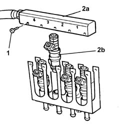
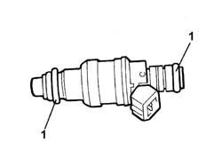

1058A68 SET OF CNG INJECTION SYSTEM INJECTORS - R R WITH CNG MANIFOLD PIPE REMOVED INCLUDES GASKET REPLACEMENT
- Path
- Procedures > 10 ENGINE UNIT > 1058 GAS CIRCUIT > 1058A GAS CIRCUIT MULTI POINT INJECTION > 1058A68 SET OF CNG INJECTION SYSTEM INJECTORS - R R WITH CNG MANIFOLD PIPE REMOVED INCLUDES GASKET REPLACEMENT
- Kind
- repair procedure (removal / refitting; the operation number is the code)
- Applies to
- engines: 2.0 16V; all production periods
- Interactive page
- https://sloeber94.github.io/elrnDB-fDct/en/#/244000823
Applies to: engines: 2.0 16V; all production periods
 Removing
Removing
 Refitting
Refitting1. Unscrew the bolts securing the top part of the manifold pipe.
2. Raise the top part of manifold pipe (2a) and remove injector (2b).
- Remove the other three injectors.

Applies to: engines: 2.0 16V; all production periods
Refitting
Removing1. Check the condition of the injector seals.

Applies to: engines: 2.0 16V; all production periods
- Fit the injectors to the manifold and position in relation to the numbering on the manifold.
- Position the top part of the manifold pipe and tighten the retaining bolts.